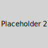

Get Involved: Contribute to the Register
The Biodiversity Management Committee (BMC)
The PBR is maintained by your local BMC, comprising elected village representatives and experts. We rely on community input!

XXXXXXX
Chairman, BMC

XXXXXXX
Expert Member (Local Botany)
How You Can Add Data
Have you spotted a rare bird? Do you know a traditional recipe using a local ingredient? We need your knowledge!
- **Observe & Document:** Take a clear photo of the species or record the traditional knowledge (name, use, location).
- **Note Details:** Write down the date, time, and exact location (if possible, GPS coordinates). Note the local name and any known uses.
- **Submit to BMC:** Send an email to the address above or submit a written report to the Village Panchayat office.
- **Verification:** The BMC will verify the information with our experts and formally add it to the digital and printed PBR.
Contact Information
Village Panchayat Office: Main Square, Burambad Village, Maharashtra
Phone: +91 XXXXX XXXXX (BMC Secretary)